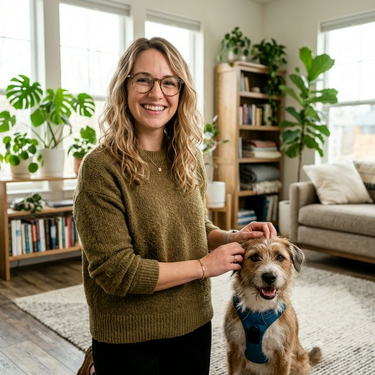
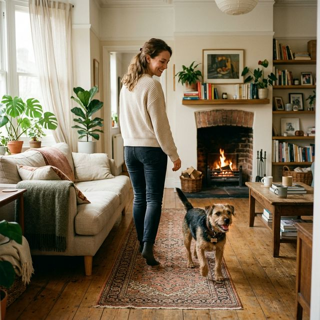

Premium Pet Care
Bienvenido a Vetis Digital.
Tu vida y la de tus mascotas, en perfecta sintonía. Acompañamos cada etapa del crecimiento con conocimiento experto.
Tu vida y la de tus mascotas, en perfecta sintonía. Acompañamos cada etapa del crecimiento con conocimiento experto.
Un estándar superior en educación y bienestar animal.
Aprende con recursos prácticos, directos y fáciles de entender para mejorar la vida diaria con tu perro o gato.
Contenido pensado para las necesidades reales de tutores de perros y gatos: conducta, convivencia, bienestar y prevención.
Promovemos una relación más consciente con tu mascota, basada en respeto, comprensión y mejores decisiones cotidianas.
Accede a ebooks, audios y materiales diseñados para acompañarte de forma cómoda, ordenada y accesible desde cualquier lugar.
Vetis Digital reúne visión de marca, enfoque educativo y una mirada responsable sobre bienestar animal, conducta y convivencia, con el propósito de crear recursos prácticos y valiosos para tutores de perros y gatos.
CEO & Fundador

Comportamiento y Convivencia
Animal
Médica Veterinaria - Bienestar
Animal
Editor de Contenidos Educativos

Descubre ebooks, guías y recursos prácticos para entender mejor, cuidar mejor y convivir mejor con tu perro o gato.

Accede a audios gratuitos con orientación práctica sobre conducta, bienestar y convivencia para aprender de forma clara y cómoda en tu día a día.
Todo lo que necesitas para aprender, entender y cuidar mejor a tu mascota.
"Adopté a mi primer perro y estaba llena de dudas. Este recurso me ayudó a entender qué hacer desde el principio, sin sentirme perdida ni cometer tantos errores por nervios. Se nota que está pensado para tutores reales."

"Siempre había querido tener un gato, pero no imaginé todas las dudas que me iban a surgir. Me encantó porque explica de forma clara cosas que nadie te dice cuando recién empiezas. Me dio mucha más seguridad."

"Lo que más me gustó es que no se queda en teoría. Son consejos claros, fáciles de aplicar y pensados para situaciones del día a día. Me ayudó mucho a ordenar rutinas y entender mejor a mi mascota."

"Antes veía mucha información en internet y terminaba más confundida que al principio. Aquí encontré una guía mucho más clara, cercana y útil. Sentí que por fin alguien me explicaba las cosas de forma simple."

"Se nota que detrás hay criterio y una intención real de ayudar. No promete magia ni soluciones vacías. Te orienta con calma, claridad y consejos que sí sirven cuando estás empezando con un perro o un gato."

"Me dio exactamente lo que estaba buscando: claridad, tranquilidad y una mejor forma de empezar esta etapa con mi mascota. Es de esos recursos que te hacen sentir más preparado y más conectado desde el inicio."

Consejos rápidos y noticias sobre bienestar animal.

3 de Enero, 2026
Entiende si se trata de apego, costumbre, curiosidad o una señal de ansiedad, y aprende cómo manejarl...
7 de Febrero, 2026
Descubre qué significa que tu gato busque dormir cerca de ti y qué revela sobre su confianza, rutina y...
Únete a nuestra lista VIP y recibe de inmediato lecciones en audio sobre el comportamiento y bienestar animal. Útiles tácticas que puedes escuchar donde quieras.
lock Tu información está 100% segura con nosotros. 0% spam.

Únete a nuestra lista exclusiva. Recibe novedades de nuestra biblioteca, consejos semanales y acceso a descuentos ocultos directamente en tu correo.
lock Tu información está 100% segura con nosotros.